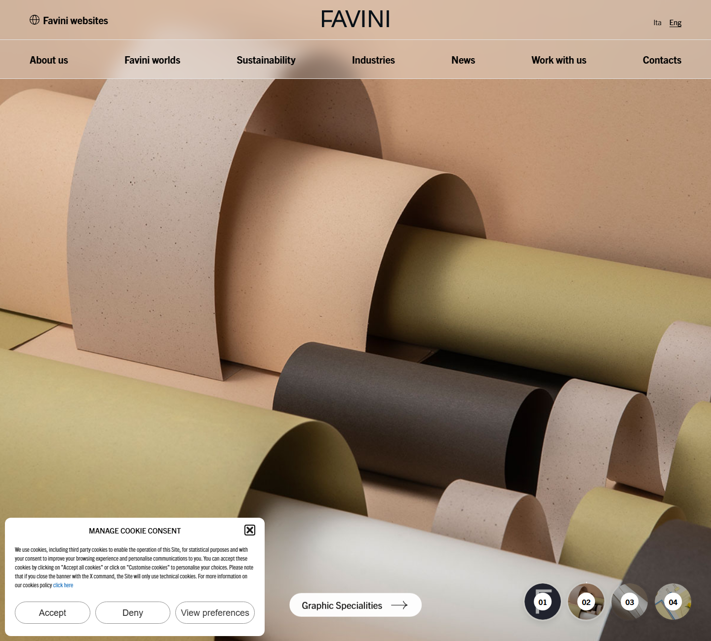
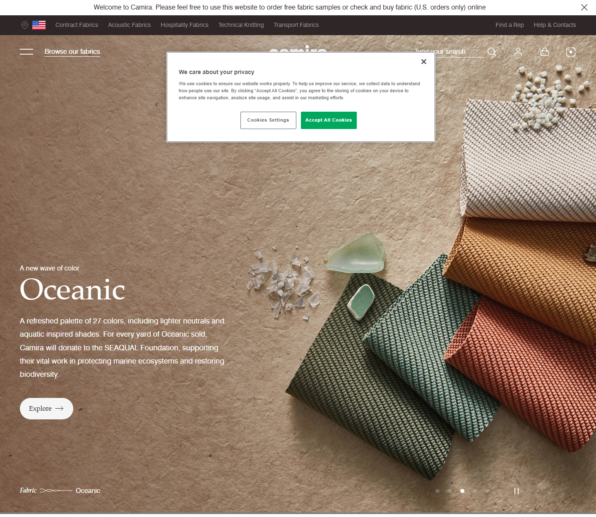
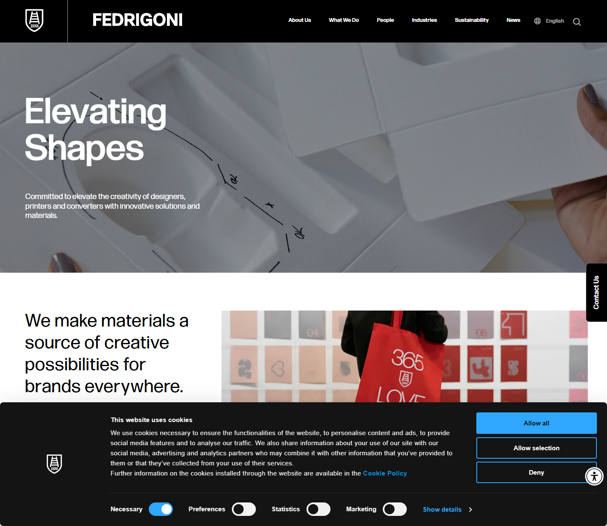

Três direções visuais reais, de marcas de papel e têxtil do mesmo mundo da NF. Todas são claras, sofisticadas e com sustentabilidade no centro. Escolha a que mais combina — e partimos dela.
Fui atrás de sites de empresas que vendem material físico (papel, tecido, cartela de cor) e que são referência mundial em apresentação de produto. O ponto em comum das boas: fundo claro cor de papel, tipografia serifada grande e elegante, foto macro do produto ocupando a tela inteira e sustentabilidade no menu principal — exatamente a pegada que você pediu.
Abaixo, cada direção com o print real do site de referência e o que eu puxaria dela para a NF.
Referência: favini.com — fabricante italiano de papéis especiais

É quase um molde pronto: trocamos os rolos de papel pelas cartelas de cores e leques da NF em foto macro. A NF literalmente vende cor — uma foto grande das cartelas abertas já é o herói perfeito. Sustentabilidade entra no menu e ganha seção própria (placas solares + papel responsável).
Referência: camirafabrics.com — fabricante inglês de tecidos

Mais "campanha de coleção" do que catálogo. Bom se a NF quiser contar histórias (lançamentos de cartela, cases). Exige foto estilizada produzida das cartelas — mais trabalho de produção que a Direção A, mas o resultado é o mais sofisticado dos três.
Referência: fedrigoni.com — grupo italiano de papel e materiais

O mais "institucional/B2B" e o mais fácil de manter. Perde um pouco da emoção da cor, mas transmite solidez e liderança de setor (o "nº1 do têxtil", +26 anos). Caminho seguro se o objetivo for autoridade mais do que beleza.
Para a NF eu iria de Direção A (Papel Tátil) com um toque de B: fundo cor de papel, logo serifado, e foto macro das cartelas de cores abertas como herói — porque o diferencial da NF é a cor física, e nenhuma ilustração compete com a cartela real. A sustentabilidade (placas solares + papel responsável) entra como pilar no menu e em seção própria, como a Favini faz.
Me diga qual direção você quer e eu monto a home de verdade nessa linha — depois partimos para as páginas internas (produtos, sobre, contato).
Obs.: os prints têm os avisos de cookie dos próprios sites por cima — ignore essa parte, é só do navegador. O que importa é o layout atrás.